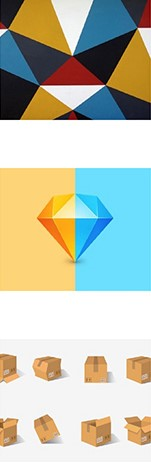

HOME
ONEZERO
ELEMENTAL
GEN
ZORA
FORGE
HUMAN PARTS
MARKER
LEVEL
HEATED
DESIGN
MO
POPULAR ON MEDIUM
Commonly Used Design Patterns in JavaSrript
A look at thesingleton,iterator,and factory patterns
John Au-Yeung in Better Programming
Feb 24 · 4 min read ★
BASED ON YOUR READING HISTORY
Why Your App Looks Better in Sketch
Exploring rendering differences between Sketch and iOS
Nathan Gitter
Jan 31,2018 · 6 min read
BASED ON YOUR READING HISTORY
JavaScript Bundlers,a Comparision
How do javaScripe bundliers stack up against each other?
Aj Meyghani
Oct 28,2018 · 27 min read ★
Popular on Medium
How to Distinguish Between a
Public Safety Cresis and a
Personal Anixiety
Imani Bashir in Forge
Mar 3 · 4 min read ★
There's an Epidemic That's a
Bigger Threat Than the
Coronavirus
Dr.David L.Katz in Heated
Feb 29 · 8 min read ★
The Flawed,Twisted Legacy of
Jack Welch
Rob Waller in Marker
Mar 3 · 4 min read ★
01
02
03

<
>